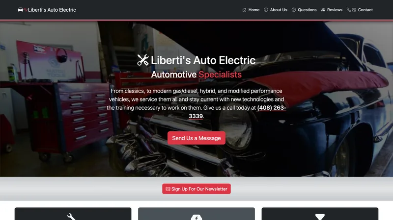

Liberti's Auto Electric
A complete, responsive site for an independent auto repair shop, built in close collaboration with the owner. It covers repair, hybrid and service offerings, ASE certification, an FAQ, reviews, hours, a map and click-to-call phone links. Nearly all the photography is mine.
Visit libertisauto.com (opens in a new tab)